Examples#
This gallery walks through blockchainkit.crypto, one experiment per
breakthrough on the cryptography history page: the one-time pad, Merkle’s puzzles,
Diffie-Hellman and RSA, discrete-log attacks, hash attacks and HMAC,
commitments, Lamport signatures, secret sharing, blind signatures, elliptic
curves, zero knowledge, Fiat-Shamir, and Schnorr signatures with their
pitfalls and multi-signatures.
Each script is self-contained and runs with
python examples/crypto/<section>/<script>.py. Explicit keys and nonces are
teaching fixtures; never reuse them for real secrets.
Blind signatures#
Chaum’s RSA blinding: authorization without seeing the message.
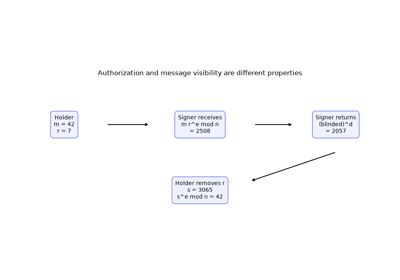
Chaum’s blind signatures: authenticate a message the signer cannot see (1982)
Commitments#
Sealed envelopes made of hashes and group elements.
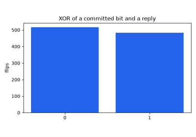
Coin flipping by telephone: hash commitments (Blum 1981)
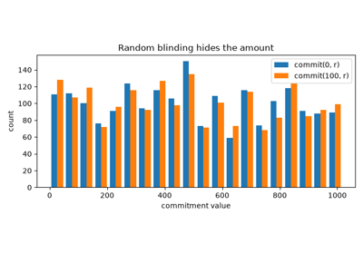
Pedersen commitments: perfectly hiding and additive (1991)
Elliptic curves#
The group law on a small curve and scalar multiplication.
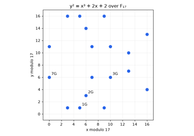
Elliptic-curve cryptography: a finite group you can draw (Miller and Koblitz 1985)
Discrete logarithms#
Generic attacks on the problem behind Diffie-Hellman and Schnorr.
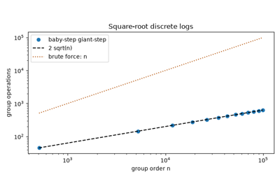
Baby-step giant-step: square-root discrete logs (Shanks 1971)
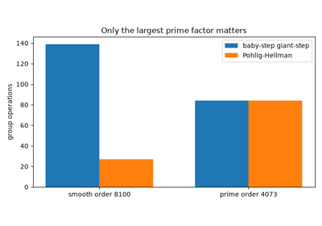
Pohlig-Hellman: why the group order must have a large prime factor (1978)
Hash-based signatures#
Signatures built from nothing but a one-way function.
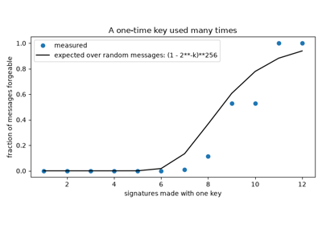
Lamport one-time signatures: signing with only a hash (1979)
Hashing#
Attacks on hash functions and the constructions that answer them: the birthday bound, Merkle-Damgard and length extension, HMAC, and SHA-256.
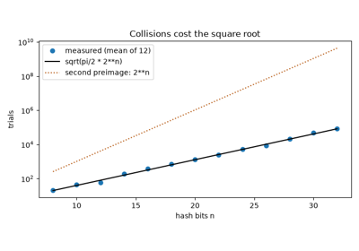
The birthday attack on hash functions (Yuval 1979)
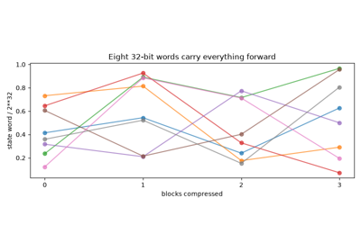
The Merkle-Damgard construction and length extension (1989)
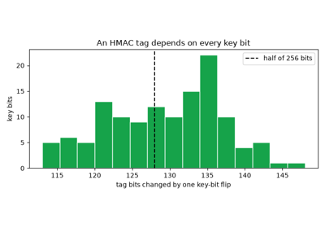
HMAC: keyed hashing that resists length extension (1996)
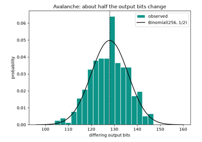
SHA-256 and the avalanche effect (FIPS 180-2, 2002)
One-time pad#
Vernam’s cipher and Shannon’s proof of perfect secrecy.
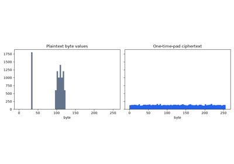
The one-time pad and perfect secrecy (Vernam 1917, Shannon 1949)
Public-key exchange#
Merkle’s puzzles, Diffie-Hellman key agreement, and RSA.
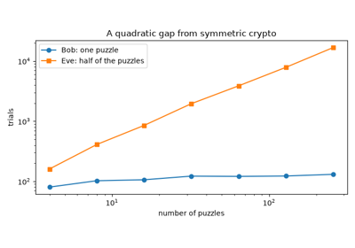
Merkle’s puzzles: the first public-key exchange (1974-1978)
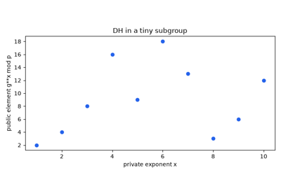
Diffie-Hellman: agreeing on a secret over a public channel (1976)
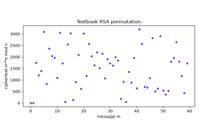
RSA: a public trapdoor (Rivest, Shamir and Adleman 1978)
Secret sharing#
Shamir’s threshold scheme and Feldman’s verifiable variant.
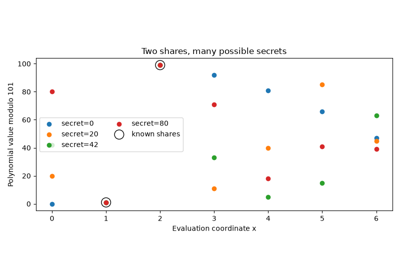
Shamir’s secret sharing: reconstruct a secret without storing it whole (1979)
Proofs and signatures#
Zero knowledge, the Fiat-Shamir transform, Schnorr signatures, nonce reuse and deterministic nonces, and MuSig multi-signatures.
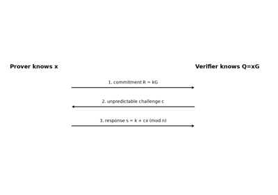
Zero-knowledge proofs: convincing without revealing (Goldwasser, Micali and Rackoff 1985)
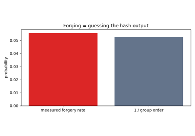
The Fiat-Shamir heuristic: from interaction to signatures (1986)
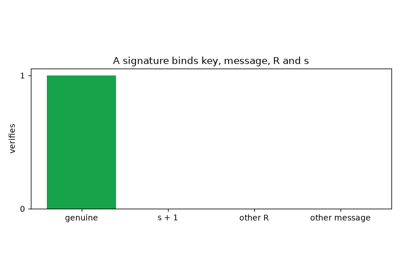
Schnorr signatures: short, fast, and linear (1989-1991)
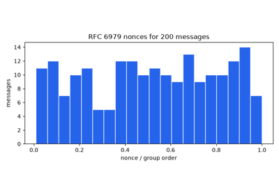
Nonce reuse in practice, and deterministic nonces (2010-2013)
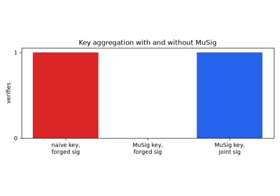
MuSig: Schnorr multi-signatures and the rogue-key attack (2018)